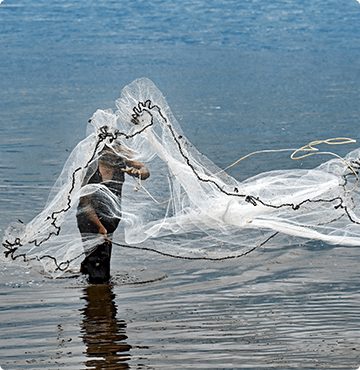
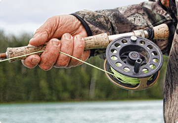

<owl-carousel [options]="mySlideOptions" [items]="images" [carouselClasses]="['owl-theme', 'sliding']">
  <div class="item" *ngFor="let image of mySlideImages;let i = index">
    <div>
      
    </div>
  </div>
</owl-carousel>


<h1 class="post">--Post recent--</h1>

<div class="cards-list">

  <div class="card 1">
    <div class="card_image">  </div>
    <div class="card_title title-white">
      <p>Fishing Rods</p>
    </div>
  </div>

  <div class="card 2">
    <div class="card_image">
      
    </div>
    <div class="card_title title-white">
      <p>Fishing Line</p>
    </div>
  </div>

  <div class="card 3">
    <div class="card_image">
      
    </div>
    <div class="card_title">
      <p>Fishing Reels</p>
    </div>
  </div>

  

</div>
<app-footer></app-footer>
